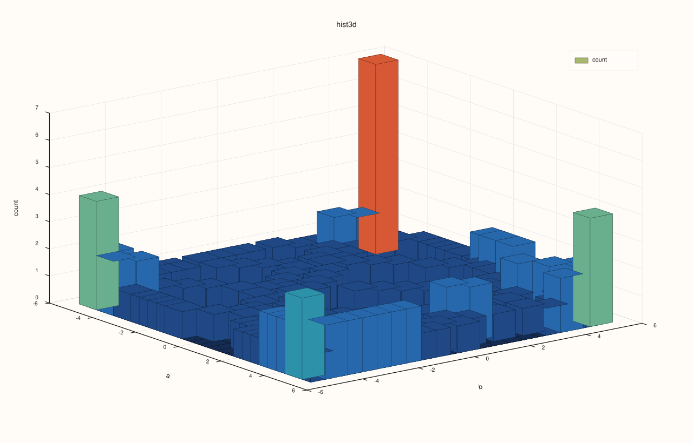
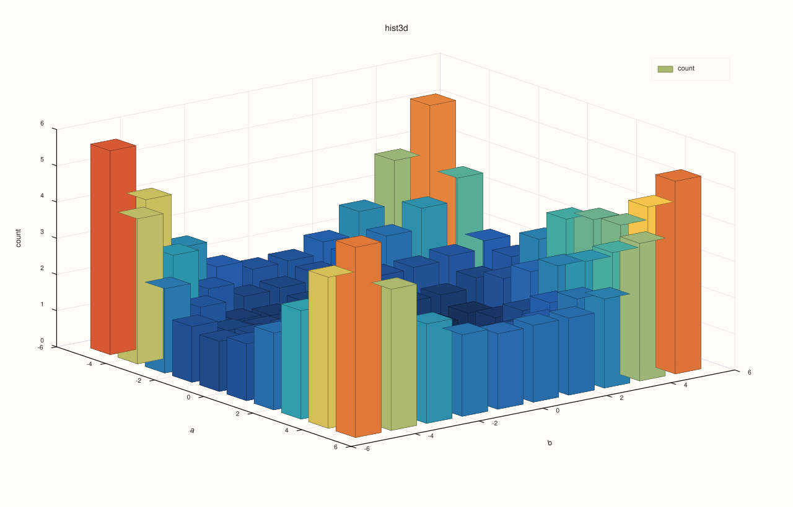
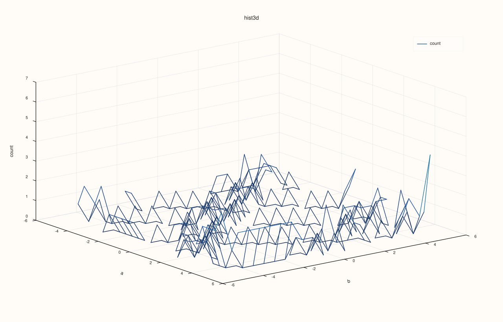
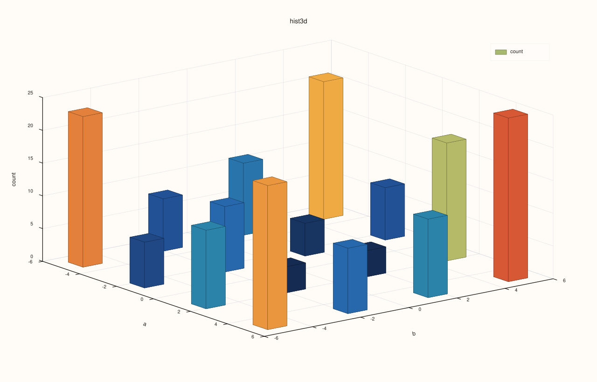

DataFramePlot3DAccessor::hist¶
Back to DataFramePlot3DAccessor API Reference
Signature¶
DataFramePlot3DAccessor::hist(
std::string_view x_feature,
std::string_view y_feature,
const Hist3DPlotOptions& options = {}) const -> pluss::pl::Studio
What It Does¶
Draws a 3D (bivariate) histogram: x_feature and y_feature are jointly binned into a
bins_x × bins_y grid over their combined ranges, and each grid cell’s count (or, with
normalize = true, its share of the total) becomes that cell’s height. By default this
height is rendered as a field of vertical bars — one per grid cell — but options can
switch the same underlying grid to a continuous surface or a wireframe mesh instead. This
is the two-feature analog of DataFramePlotAccessor::hist,
which bins a single feature into a 2D bar chart.
See line() for the shared Studio-return / no-cout mechanics, feature-to-
axis conversion rules, and the full Plot3DSceneOptions/Plot3DTraceOptions layering
explanation — this page only covers what’s specific to hist().
Parameters¶
x_feature, y_feature (std::string_view, both required)
The two numeric features jointly binned into the grid. Both must resolve to numeric
values — see line()’s note on feature-to-axis conversion.
options (Hist3DPlotOptions)
cpp struct Hist3DPlotOptions { std::int64_t bins_x{26}; std::int64_t bins_y{20}; bool normalize{false}; bool smooth{false}; std::int64_t smooth_passes{1}; bool as_surface{false}; bool as_wireframe{false}; Plot3DSceneOptions scene{}; Plot3DTraceOptions trace{}; XYAlignOptions align{XYAlignMode::Inner, XYAlignBy::Auto, 0.0}; };
bins_x/bins_y are floored to a minimum of 4 each — a request below that is
silently clamped up, never throwing. normalize = true divides every cell by the grid’s
total count, turning raw counts into a density-like share (skipped if the total is
non-finite or 0, in which case the raw counts pass through unchanged). smooth = true
applies a smoothing pass to the grid before rendering, repeated smooth_passes times
(floored to a minimum of 1); this softens sharp bin-to-bin jumps at the cost of
blurring the exact counts. as_wireframe and as_surface control the render shape —
see the note below for exactly how they interact. align is present for the same
struct-reuse-with-Catalog::plot3d() reason as Scatter3DPlotOptions’s (see
scatter()) — inert on DataFramePlot3DAccessor::hist() itself.
```{note} Three mutually exclusive render shapes, checked in a fixed order
`as_wireframe` is checked first: if `true`, the grid is drawn as a **wireframe mesh**
(same shape [`wireframe()`](wireframe.md) draws), regardless of `as_surface`. Otherwise,
if `as_surface` is `true`, the grid is drawn as a **continuous surface** (same shape
[`surface()`](surface.md) draws). If neither flag is set (the default for both), the
grid is drawn as a field of **3D bars** — one vertical "spire" per grid cell, the
conventional 3D-histogram look. Setting both flags is legal; `as_wireframe` simply wins.
```
Returns¶
pluss::pl::Studio
A figure with one 3D pane containing a single trace over the bins_x × bins_y grid,
shaped as bars, a surface, or a wireframe depending on options.
Examples¶
Example 1. Default options: the conventional 3D-bar histogram.
using namespace pluss::table;
std::vector<double> xs, ys;
for (int i = 0; i < 200; ++i) {
xs.push_back(std::sin(static_cast<double>(i) * 0.1) * 5.0);
ys.push_back(std::cos(static_cast<double>(i) * 0.13) * 5.0);
}
auto samples = DataFrame({
{"a", Thread(pluss::make_series(xs))},
{"b", Thread(pluss::make_series(ys))},
});
auto chart = samples.plot3d().hist("a", "b");
chart.save_svg("ab_hist3d.svg");
a and b are jointly binned into the default 26 × 20 grid; each cell’s raw count
becomes the height of one vertical bar.

Example 2. normalize = true: cell heights become a share of the total instead of a raw
count.
Hist3DPlotOptions options;
options.normalize = true;
auto chart = samples.plot3d().hist("a", "b", options);
chart.show();

Example 3. A coarser grid with smoothing applied.
Hist3DPlotOptions coarse;
coarse.bins_x = 10;
coarse.bins_y = 10;
coarse.smooth = true;
coarse.smooth_passes = 2;
auto chart = samples.plot3d().hist("a", "b", coarse);
chart.save_pdf("ab_hist3d_smooth.pdf");

Example 4. as_surface = true: the same binned grid, rendered as a continuous surface
instead of discrete bars.
Hist3DPlotOptions surface_render;
surface_render.as_surface = true;
auto chart = samples.plot3d().hist("a", "b", surface_render);
chart.show();

Example 5. as_wireframe = true: the same grid again, this time as a wireframe mesh.
Hist3DPlotOptions wire_render;
wire_render.as_wireframe = true;
auto chart = samples.plot3d().hist("a", "b", wire_render);

Example 6. Both as_surface and as_wireframe set: as_wireframe wins, per the note
above.
Hist3DPlotOptions both_flags;
both_flags.as_surface = true;
both_flags.as_wireframe = true;
auto chart = samples.plot3d().hist("a", "b", both_flags);
This produces the identical figure to Example 5 — as_surface is never consulted once
as_wireframe is true.

Example 7. Requesting fewer than 4 bins on either axis is silently clamped, not thrown.
Hist3DPlotOptions tiny;
tiny.bins_x = 1;
tiny.bins_y = 2;
auto chart = samples.plot3d().hist("a", "b", tiny);
Both bins_x and bins_y are clamped up to 4, the minimum, rather than producing a
degenerate grid or throwing.

Notes¶
bins_x/bins_yare floored to4;smooth_passesis floored to1.normalizedivides by the grid total only when that total is finite and positive; otherwise raw counts pass through unchanged.The render shape is
as_wireframe→as_surface→ default bars, checked in that fixed order — see the note above.Returns a
pluss::pl::Studio— seeline()’s important callout for how to view or save the result.
See Also¶
DataFramePlot3DAccessor::surface/wireframe: the same two render shapeshist()’sas_surface/as_wireframeflags borrow, but built from an aggregated pivot grid instead of a binned count grid.DataFramePlotAccessor::hist: the single-feature 2D histogram this method generalizes to two features.